Recast Cloud With Intune: App Deployment and Patching
Getting an app into Microsoft Intune is only the first part of the work. In this blog post I explain how to connect Recast Cloud to Intune, prepare an app deployment, and configure a separate process for keeping installed apps up to date.
I used 7-Zip as the example and captured the portal screens. The tour covers connection setup, deployment, update mode, scheduling, and the checks before a wider rollout.
Note: This tour uses the Recast Cloud preview portal, inspected on October 4, 2026. The environment reached Ready, and authentication checks passed. An integration test still returned a configuration error. I therefore stopped before saving or running a deployment process. The deployment and patching instructions below combine the inspected wizard with linked vendor documentation; they are not a claim of a completed device test. Private account and tenant details have been removed from the screenshots.
Watch the video walkthrough (German)
The video uses Google Chrome; the written portal inspection below uses 7-Zip. They illustrate the same workflow, not the same completed deployment test.
What Does Recast Cloud Manage?
This tour focuses on the Patching area of Recast Cloud. The portal exposes other product areas, too; the Intune connection does not validate them.
These are the four objects I would learn first:
| Object | What I use it for |
|---|---|
| Environment | Connect the patching configuration to the Intune service connection. |
| Application catalog | Find the application and the correct architecture. |
| Deployment process | Bring an environment, applications, events, and a target group together. |
| Event | Decide what can trigger a process. |
The navigation separates Patching â Applications, Deployment Processes, Events, and Settings. I would start with one app and one small device group to make each result easier to understand.
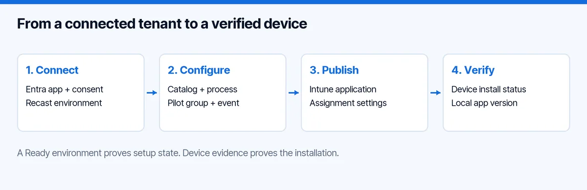
Conceptual workflow. The last two stages still need a live pilot test in this lab.
I previously wrote an overview of Recast application management. This article focuses on the cloud patching screens I inspected and the practical Intune workflow.
How Do I Connect Recast Cloud to Intune?
Before starting, prepare a valid product license or trial, an Intune tenant, and an administrator who can register an application and grant the required consent. For the deployment test, also prepare an enrolled Windows device and a dedicated Entra device group.
1. Prepare the Entra Application
In Microsoft Entra admin center, open App registrations â New registration. Name it Recast Cloud Patching Lab and use the single-tenant account option for this lab.
Under API permissions, add these Microsoft Graph application permissions and grant administrator consent:
DeviceManagementApps.ReadWrite.AllGroupMember.Read.AllDeviceManagementConfiguration.Read.AllDevice.Read.All
Create a client secret under Certificates & secrets. Keep its value, the application client ID, and the directory tenant ID ready for the connection. The secret value is different from the secret ID. Recast documents this configuration in its Entra ID setup guide.
Hint: Record the secret expiry and an owner for renewal. Keep the value out of documentation, screenshots, and tickets.
2. Add the Service Connection
In Recast Cloud, open Administration â Service Connections and create a connection. In the inspected portal, the connection type was called AzureActiveDirectory, even though Microsoft now calls the directory product Entra ID.
Enter a recognizable connection name, tenant ID, client ID, and client secret. Complete the Confirmed acknowledgement and submit the form. In this cloud lab, Use a Recast Proxy to connect was off. Treat that as the configuration of this lab; use the connection requirements for your own architecture.
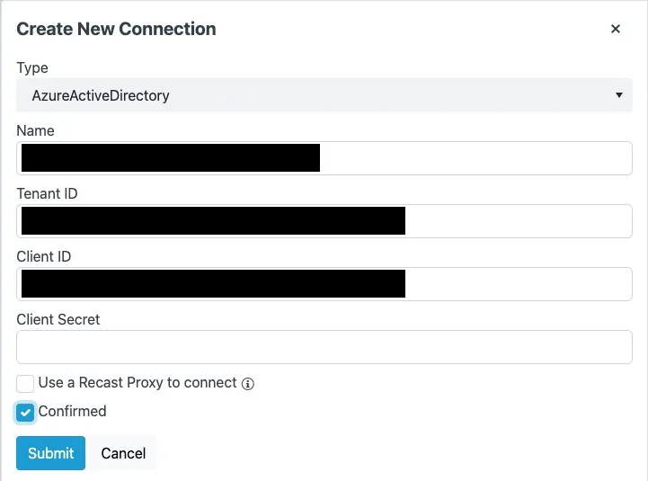
The labels and controls are preserved. Private field values are blacked out; no secret is shown.
3. Create the Patching Environment
Open Patching â Settings â Add Environment, choose the Intune connection, and follow the setup wizard. In this preview, selecting Intune removed the UNC input from the wizard, and the distribution-point-group step was skipped.
For an initial evaluation, choose the review option âNo, Iâll manually start the process when Iâm ready.â Complete the wizard and check the environment list. Mine showed Ready, type Intune, and zero deployment processes.
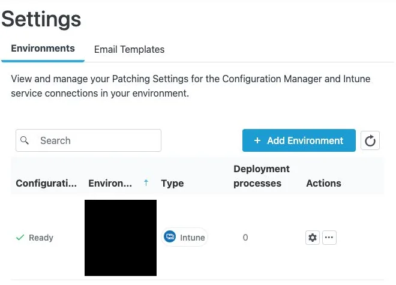
I also verified app-only read access to the Graph devices, groups, mobile applications, and device configurations endpoints. Each returned HTTP 200. Those checks validate authentication and those reads. They do not test package upload, assignments, or endpoint installation.
Note: Ready is the setup state shown by the portal. Also run the integration test and resolve its result before treating the environment as ready for an operational deployment. The error from my lab is covered below.
How Do I Deploy the First Application?
Start with a normal deployment process when the goal is to install an application on a device that might not have it yet.
1. Choose the Application and Architecture
Open Patching â Applications and search for 7-Zip. The catalog showed separate x64, ARM64, and x86 entries. All three displayed version 26.03 during this inspection. That is a dated observation; check the version shown when you run your test.
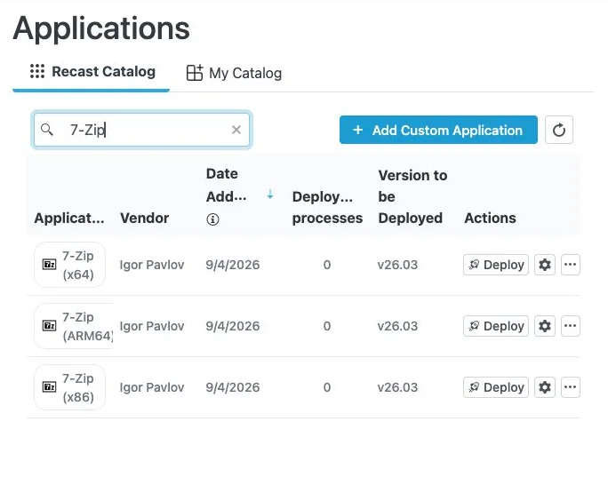
Match the architecture to the pilot device. I selected 7-Zip (x64). One app is enough to learn the workflow.
2. Walk Through the Deployment Wizard
Open Patching â Deployment Processes â Add Deployment Process. The inspected Intune wizard had five steps:
- Select Environment: choose the Intune environment. Leave Create as update process at No for the first-install scenario.
- Select Applications: select the checkbox for 7-Zip (x64).
- Name the Deployment Process: use a name such as
Lab 7-Zip install. - Select Events: for a controlled initial evaluation, turn New Version Available off.
- Select Group: search for and select the dedicated pilot group.
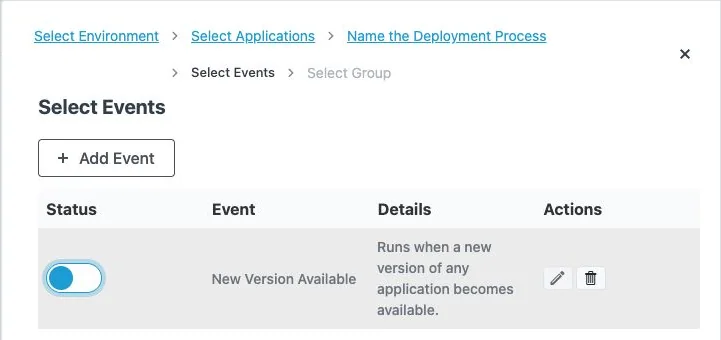
Note: Turning this event off controls that trigger. It is not a guarantee that saving a new process will leave it idle. Recast documents an initial run for newly created scheduled processes. Prepare the pilot scope and settings before saving. Source: Recast events.
The group screenshot below deliberately shows No groups selected. It documents the selection screen before an assignment was made. For your own test, select the named pilot group and verify the selection before the final save.
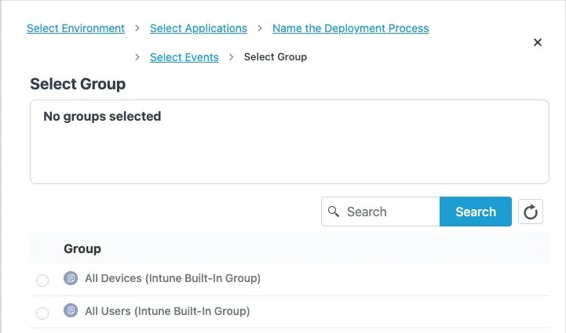
I would avoid All Devices and All Users for the first test. A dedicated group keeps the checks and troubleshooting focused.
3. Review Installation and Notification Settings
Open the environment settings using the gear icon under Patching â Settings. In Deployments â Basic, the inspected environment used Required and Show all as toast notifications.
| Deployment Type | Behavior Shown in the Portal |
|---|---|
| Required | Application installation is forced. |
| Available | Users can choose to install the application. |
| Uninstall | Application uninstallation is forced. |
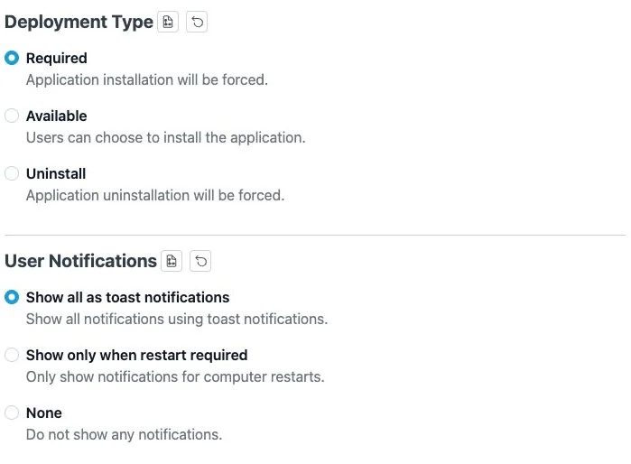
For a controlled installation test, I would use Required on the pilot group and keep notifications visible. Review inherited settings as well as any process-specific overrides. Recast explains the available controls in its Intune deployment settings documentation.
4. Save, Run, and Verify the Result
After the integration test passes and the pilot scope is reviewed, save the process. If its status is Pending run, use the process action menu and select Run. Open View Details to follow its progress. These actions are documented in Deployment Processes; I did not execute them in this lab.
Then open Intune and check the resulting application, its version, and its assignments. Finally, verify installation on the pilot device. An application appearing in Intune is an intermediate result, not proof that its installer completed.
How Do I Patch an Installed Application?
For patching, create a separate process with Create as update process â Yes. The portal tooltip explains that update applications apply when a previous version of the same application is present. It also explains that the process and imported application names receive an Update prefix.
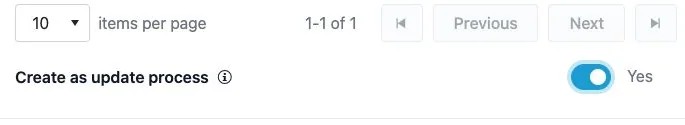
I may want 7-Zip installed for one audience, while updating existing installations for another. A patching process should not become a new installation policy for everyone.
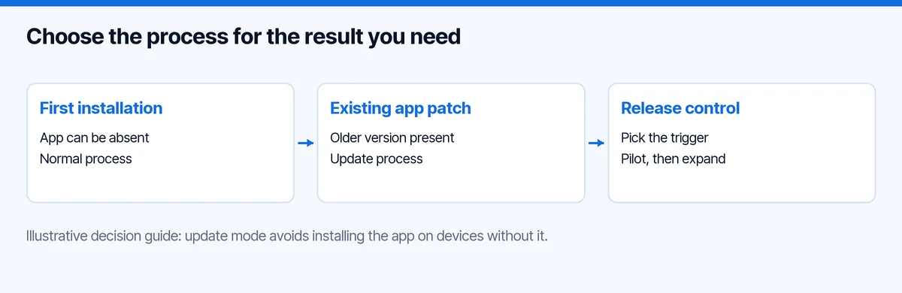
Conceptual guide, based on the inspected update-mode explanation.
Follow the same wizard: select the environment, enable update mode, choose 7-Zip (x64), and name the process clearly. In Select Events, enable New Version Available if you want new catalog versions to trigger it. Select the patch pilot group and review the final settings before saving.
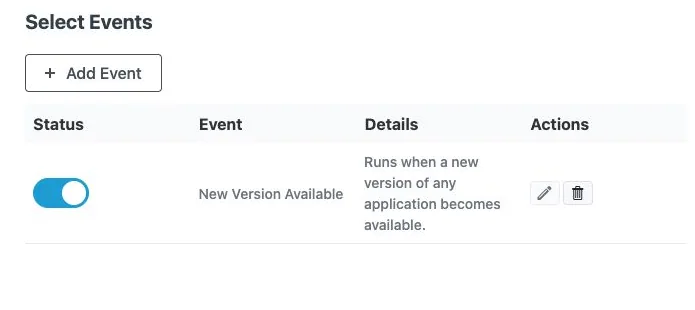
Recast documents the workflow and applicability in Run a deployment process in update mode.
For an acceptance test, I would prepare these three cases:
| Pilot Device | What I Would Verify |
|---|---|
| Older matching 7-Zip version installed | The update applies and the installed version changes. |
| Target version already installed | No unnecessary reinstall or version regression occurs. |
| 7-Zip absent | The update process does not install it as a new application. |
These are test criteria, not results from this lab. Check the installed version and launch the app to confirm it remains usable.
How Do I Control When Updates Run?
Recast Cloud exposes an Events page as well as the event selection inside each process. I inspected the Add Event dialog and its Patch Tuesday option.
To prepare a monthly window, open Patching â Events â Add Event, enter a clear name, choose Patch Tuesday, set the delay, and enter the time. The preview dialog showed a delay range of 0â14 days and explicitly labelled the time as UTC.
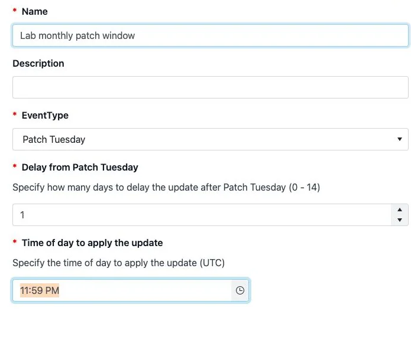
Unsaved example. The displayed time is the dialog value, not a recommended deployment time.
Save the event when its schedule is correct, then attach and activate it for the intended deployment process. Active events are additive: a scheduled event does not replace an active new-version event. If the process should run only on the schedule, disable the new-version trigger. Source: Recast events.
Hint: Convert the chosen UTC time to your local maintenance window and account for daylight-saving changes. Also remember that this controls the process trigger; it is not proof that every device installs at that exact time.
For a first rollout, I would use a small pilot and promote manually after checking the results. Later, I would consider a broader ring with a delay. Recast supports delays between process steps, described in Deployment Processes. A delay provides time for observation; it is not a human approval gate.
How Do I Check Success and Troubleshoot?
I would check three places: the Recast process, the Intune assignment, and the device itself.
In Recast, use View Details to inspect the process timeline and application status. Check for Updates can check for newer versions and run the process when an update is available. Treat that as an action, rather than a harmless refresh. Recast also notes that pausing a process does not stop deployments already running in Intune, and deleting a process does not remove the Intune application. Source: Deployment Processes.
In Intune, open Apps â All Apps â the application â Device install status. Review the status, status details, and last check-in. Microsoft documents these fields in Monitor app information and assignments.
On the device, confirm the version and launch the app. For failures, keep the error code, time, and installation log together. ErrorHunter can help explain codes, and cmtrace.dev can help read the logs.
The Integration Error in My Lab
The environment action Test Integration returned:
Unc path is not configured.
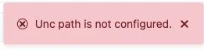
The Intune wizard had removed the UNC field, and I did not find one in the environmentâs General settings. The environment still showed Ready. I could not determine the cause from the available screens.
I would raise this with Recast before continuing: include the preview version, environment type, error, and missing UNC input. I would not invent a path or switch connection architecture to clear the message.
This is the validation state of this tour:
| Check | Result |
|---|---|
| Entra application and consent | Configured |
| App-only Graph read checks | Four endpoints returned HTTP 200 |
| Recast Intune environment | Ready displayed |
| Catalog and deployment/update wizard | Inspected |
| Integration test | UNC configuration error remains open |
| Saved deployment, app publication, or assignment | Not performed |
| Device installation or patch | Not tested |
For the wider operating model, see my Intune app lifecycle guide. If delivery fails, use the Intune troubleshooting guide to separate assignment, installation and device evidence.
What Would I Test Next?
My next step is to resolve the integration error and complete one small pilot:
- Confirm the pilot group contains only the intended test devices.
- Save the normal 7-Zip process and check publication, assignment, and installation.
- Test the update process against an older installation and an app-absent device.
- Validate the chosen event and schedule before expanding the target group.
Recast Cloud provides the screens to configure that workflow. For me, the useful evaluation result will be evidence that a new version reaches the intended devices and leaves the application working. I hope this tour makes the first setup and those checks easier to follow.